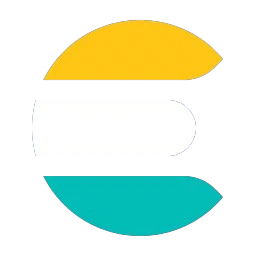

Elasticsearch
KubeCon's schedule and Hero Goggles' registry, in one search.

Track: Find the Right TalkWhat we built
Elasticsearch 9.5 holds KubeCon NA 2026's schedule, 600 sessions and 712 speakers from Sessionize, beside Hero Goggles' own registry.
One search box on the live map, and the search MCP tool, answer "who is talking about eBPF?" and "find Kunal" alike.
It is also influence-api's store: the registry, each seeker's target and every alert survive a deploy.
How it works
GET /api/search?q=and the MCP toolsearchqueryinfluence-*,kubecon-*whenES_URLis set, and the registry alone without it (influence-api/server.js).- The registry lives in
influence-influencersandinfluence-beacons; the seek targets inseek-targetsand the alerts inalerts-influence, both outside the patterns search runs over, so neither shows up as a result. registry.seed.jsonfills only what Elasticsearch does not have, so a restart never undoes an influencer's own edits.- Under every search box the map says "Search by Elasticsearch" (
hero-goggles/src/live/Sponsors.jsx).
Running it under gVisor
Elasticsearch 9.5.6 and Kibana run in save-the-world-search on the tenants' pool, under GKE Sandbox. Two findings:
ECK cannot run there (GKE's gVisor annotation keys from ECK's volume names exceed 63 bytes), so Elasticsearch runs as plain manifests;
and Elasticsearch 9 boots under gVisor only with -XX:+StartAttachListener.
Status
Live Search and storage, since 9 November 2026. The schedule was loaded by hand; the loader is not in a public repo. Not live Kibana's public address, for the same edge reason as Radar's.